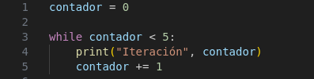
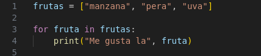
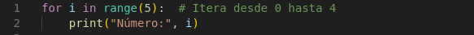
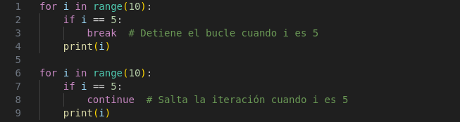
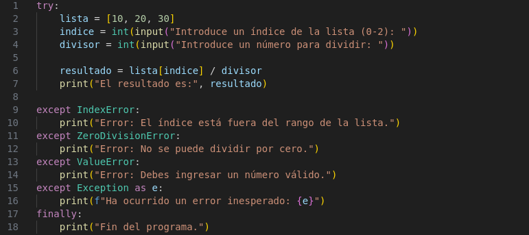

Las estructuras de bucle permiten repetir un conjunto de instrucciones varias veces.
Bucle while
El bucle while ejecuta un bloque de código mientras la condición sea verdadera.

Bucle for
El bucle for se usa para iterar sobre una secuencia (lista, tupla, cadena, etc.).

Uso de range() en for
Se puede utilizar range() para generar una secuencia un números de veces.

Instrucciones break y continue
-break: Finaliza el bucle antes de que termine.
-continue: Salta a la siguiente iteración sin ejecutar las siguientes líneas del bucle.

Estructuras de Control de Excepciones
Python permite manejar errores en tiempo de ejecución con try-except.

Explicación:
-Se solicita un índice para acceder a un valor en la lista.
-Se pide un número para dividir ese valor.
-Se manejan distintas excepciones:
-IndexError: Si el usuario ingresa un índice fuera de rango.
-ZeroDivisionError: Si intenta dividir por 0.
-ValueError: Si ingresa un valor no numérico.
-Exception: Captura cualquier otro error no previsto.
-finally asegura que siempre se ejecute un mensaje final.